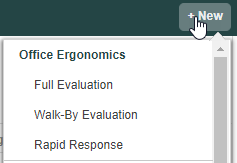
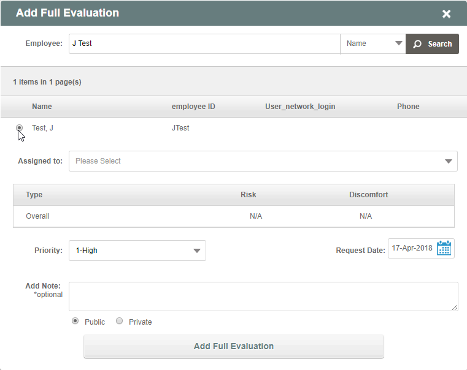

To create a new case:
Click +New on the top bar and select the type of case to create from the drop-down list. The list is dependent on the case types set up in your system.

In the dialog, search for the Employee. Default search is by name; you can change the search to be by email or employee ID by clicking on the drop-down list next to the Search button. Enter search string and click Search, then select from possible matches.

Request Date: Defaults to today. To change the date, click the calendar icon and select the desired date.
This will be the date of the request used for reporting.
Add Note: Optionally, you may add a note, if available. Choose Public or Private for the note type.
Click the Add [Case Type] button.
The case will be created and will be available for scheduling by a user who has scheduling permissions.